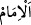

“Biz onlardan da” gölge günü azâbı (bk. eş-Şuarâ, 26/189) ile “intikam aldık.” et-
Tibyân’da şöyle der: “Allah Teâlâ Medyenliler’i korkunç bir ses ile, Eykeliler’i ise
ateşle helâk etti. Şöyle ki Allah onların üzerine yedi gün boyunca çok şiddetli bir sıcak
gönderdi. Sıcağın sıkıntı ve şiddetinden iyice bunalıp ağaç gölgelerinde gölgelenmek
amacıyla evlerinden çıkınca da ateşli bir samyeli gelip hepsini yaktı.”
Bazı tefsirlerde şöyle denir: Allah, onların üzerine bir bulut gönderdi. Ferahlamak
için onun altına (gölgesine) sığınınca da buluttan ateş/şimşek gönderdi ve ateş hepsini
yaktı. İşte gölge günü azâbı budur. Ne güzel söylemişler: “Şer, hiç beklenmedik bir
taraftan gelirse çok daha tasa verici olur.”
Bu “ikisi de” yâni Lût kavminin yaşadığı şehirlerin en büyüğü olan Sodom ile Eyke,
“açık bir yol üzerindedir.” İnsanların geçtiği ve gördüğü âşikâr bir yol üzerindedir.
“__WORDel-Îmâm”, kendisine uyulan şeyin adıdır. Allah Teâlâ şöyle buyurur: “Senin hiç
şüphen olmasın insanlara imam” yâni uyulan, önder edinilen biri “kılacağım” (el-
Bakara, 2/124). Kitâba da ‘imam’ denir. Çünkü kitabın sayıp döktüğü şeylere
uyulmaktadır. Allah Teâlâ şöyle buyurur: “O gün, bütün insanları imamlarıyla” yâni
kitaplarıyla birlikte “çağıracağız.” (el-İsrâ, 17/71) Yine şöyle buyurmuştur: “Biz her
şeyi apaçık bir imamda,” yâni bir kitab olan levh-i mahfûzda “saydık.” (Yâsîn,
36/12). Yola da imam denir. Çünkü yolcu ona uymakta ve kılavuz edinmektedir. İnşâat
ustalarının binâ yapımında kullandığı şakûl ipine de imam denir.
Ebü’l-Ferec İbnü’l-Cevzî der ki: “Şuayb kavmi, inkârlarının yanı sıra ölçü ve tartıda
da hîle yapardı. Şuayb (a.s.) onları tevhîde dâvet etti. Ölçü ve tartıda hîle yapmalarını
yasakladı.”
Ebû Hüreyre (r.a.)’dan rivâyet edildiğine göre Rasûlullah (s.a.) yiyecek maddesi
satan bir adamın yanından geçerken nasıl satış yaptığını sordu. Adam da söyledi. Allah
Teâlâ O’na elini çuvalın içine sokmasını vahyetti. Elini sokup çıkarınca bir de ne
görsün alt kısımları nemli. Bunun üzerine Aleyhi’s-salâtü ve’s-selâm Efendimiz şöyle
buyurdu: “Aldatan bizden değildir.”[83]
el-Kâmûs’ta der ki: “el-gış”, nasîhat edermiş gibi gözükmek veya içindekinin tersini
dışa vurmak demektir. “Mağşûş”, saf/hâlis olmayan, sahte mânâsındadır. Tehzîbü’l-
masâdır’da ‘el-gışş’ın hıyânet etme anlamında olduğu belirtilir. Kelime, bulanık
çamurlu su anlamındaki “el-gaşeş”den müştaktır. el-Fethu’l-karîb’e göre ise “el-gışş”ın
aslı, çoğaltmak amacıyla su karıştırılan süt anlamındaki “el-lebenü’l-mağşûş”tur.
İbn Ömer (r.anhumâ)’dan rivâyet edildiğine göre Rasûlullah (s.a.) sâhibinin süslediği
bir yiyecek maddesinin yanından geçti. Hz. Peygamber elini yiyeceğin içine sokunca
oradakilerin kötü olduğunu gördü. Bunun üzerine şöyle buyurdu: “Bunu ayrı, ötekini
ayrı sat. Bizi aldatan bizden değildir!”[84]
Ebû Hüreyre (r.a.)’ın Nebî (a.s.)’dan rivâyet ettiğine göre bir adam kendisine âid bir
gemide şarap satıyordu. Gemide bir de maymunu vardı. Şaraba da su karıştırıyordu.
Derken maymun adamın para kesesini aldı ve geminin direğine çıkıp keseyi açtı. Bir